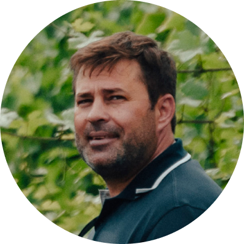

Осенью 2016 года на винодельческой карте России появился
«GALITSKIY & GALITSKIY» — совместный проект Сергея Галицкого и Сергея Галицкого-мл. с главным виноделом Алексеем Толстым.
Сегодня талантом и творчеством увлечённой команды, не покоряя природу, а сосуществуя, в одном из самых прохладных терруаров страны мы создаём премиальные терруарные вина.Сергей Галицкий старший
Соучредитель и соинвестор
Основал «Магнит», построил футбольную академию,
стадион и парк «Краснодар» и помог проекту «Галицкий и Галицкий» стать
масштабным. Когда Сергей Галицкий-мл. предложил участвовать в проекте,
он принял решение сразу же. Инвестирует в проект и делится
опытом управления.
Сергей Галицкий младший
Основатель, соучредитель и соинвестор
Соучредитель и руководитель холдинга Constell Group,
начал проект с желания построить небольшую семейную винодельню, но нашёл 200
гектар в уникальном терруаре и теперь вы находитесь на этом сайте.
Сергей инвестирует в проект и руководит им: от стратегических
планов до тактических действий.

Алексей Толстой
Главный винодел проекта
Один из самых талантливых, опытных
и уважаемых российских виноделов. Сначала Алексей выступал для проекта
в роли консультанта, приезжая на виноградники дважды в неделю.
Сегодня он отдаёт проекту всё своё время и руководит всеми процессами
на винограднике и винодельне.

Я хочу, чтобы люди через двадцать лет ценили русское
вино. Чтобы они относились к продукту, произведённому здесь, с уважением.
С уважением по праву.